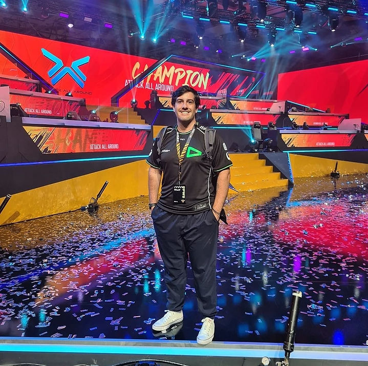

Texto de Yan Cintra

Nesta última semana a Ministra do Esporte Ana Moser emitiu uma declaração sobre a não conformidade dos esportes eletrônicos dentro dos esportes, assim como ações ativas para que os eSports não sejam definidos como esporte e os marginalizando como pertencentes apenas da indústria do entretenimento.
Isso causou muita revolta por parte da comunidade dos esportes eletrônicos, afinal, quem vive diariamente este contexto, sabe das similaridades com os “esportes convencionais”.
O Esporte Eletrônico, como muito discutido na comunidade acadêmica e científica, compartilha muito de suas características com os esportes tradicionais, tais como a competitividade, as rotinas de treinamento, orientação a objetivos, regras definidas, campeonatos organizados e o desenvolvimento de habilidades técnicas, táticas, mentais e físicas.
A fisicalidade dos esportes eletrônicos advém de movimentos finos e precisos, coordenação motora, velocidade de reação e até resistência muscular, porém, para algumas pessoas, é diferente do que se considera “esperado” nos esportes tradicionais, como uma “atividade física complexa ou a predominância dos aspecto físico”. Entretanto, essa definição pode ser considerada puramente arbitrária e muitas vezes baseada em preconceitos. Modalidades que passaram por isso, como xadrez, bocha e automobilismo, atualmente são consideradas esportes.
Além dessas, será que no Tiro Com Arco ou até no Tiro Esportivo, modalidade que faz parte dos Jogos Olímpicos desde Atenas, 1896, tem realmente a predominância do aspecto físico em relação ao aspecto mental?
Poderíamos também destacar nesta discussão a entrada do breakdance no quadro de modalidades Olímpicas, dança que, anteriormente, era considerada por muitos apenas entretenimento.
Em uma de suas falas, a Ministra afirma que os esportes eletrônicos são jogos previsíveis, o que já mostra uma falta de conhecimento por parte dela, afinal, jogos de eSports podem ser extremamente imprevisíveis e emocionantes.
Acredito que a Ministra se equivocou em muitas de suas falas, porém a comunidade está totalmente aberta ao diálogo e a esclarecer qualquer dúvida ou falta de conhecimento sobre o contexto.
Atualmente, os esportes eletrônicos já ocupam espaços de iniciação esportiva, reabilitação, projetos sociais, práticas de tempo livre e o alto rendimento. Muitas organizações de eSports contam com uma grande comissão técnica, formada por treinadores, analistas, psicólogos, fisioterapeutas, preparadores físicos, nutricionistas, dentre outros profissionais.
Compreendo que se a discussão for em relação ao direcionamento de verbas públicas, certamente existem algumas prioridades e os esportes eletrônicos não estejam entre elas, já que grande parte do cenário vive de investimentos privados, porém, afirmar que os esportes eletrônicos não podem ser considerados esportes, talvez não seja o melhor caminho.
Sugiro aqui alguns artigos acadêmicos que trazem essa discussão à tona para quem tiver interesse:
BARBANTI, Valdir. O que é esporte? Revista Brasileira de Atividade Física e Saúde, v. 11, p. 54-58, 2006.
JENNY, Seth E.; MANNING, Douglas; KEIPER, Margaret C. e OLRICH, Tracy W.. Virtual(ly) Athletes: Where eSports Fit Within the Definition of “Sport”, Quest, online 2016.
LEIS, Oliver; RAUE, Charlotte; DREISKAMPER, Dennis; LAUTENBACH, Franziska. To be or not to be (e)sports? That is not the question! Why and how sport and exercise psychology could research esports. German Journal of Exercise and Sports Research 51, 241-247, 2021.
Sobre o autor:
Psicólogo, especialista em Psicologia do Esporte. Diretor do Departamento de Saúde e Performance da LOUD. Membro da Associação Brasileira de Psicologia dos Esportes Eletrônicos e associado ABRAPES